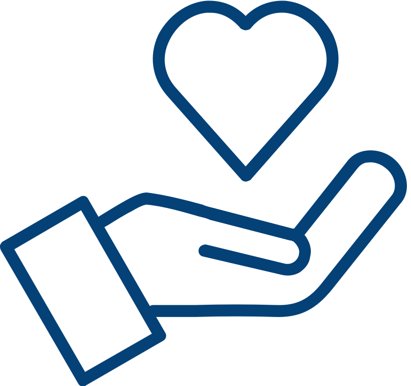

Novo Ensino Médio Eletivas, Reforço Interativo, STEAM e Robótca
Reforço Interativo
História do projeto:
A pandemia de COVID-19 trouxe medos, mudanças e muitas perdas, as formas de ensinar e aprender também se reinventaram nesse percurso. Com as escolas fechadas e o ensino remoto padronizado como “novo normal”, os professores precisaram se adaptar às múltiplas telas e tecnologias, descobrindo novas técnicas, materiais e abordagens com os alunos.
O Reforço Interativo foi criado em março de 2020, uma iniciativa online que utiliza o material pedagógico das aulas para criar métodos lúdicos de aprendizagem.
Atualmente, o Reforço Interativo atende 22 escolas, mais de 15.947 alunos de escolas de São Paulo, Cotia, Campos do Jordão, Mococa, Brasília (DF), Óbidos(PA) e Conde (BA)
O projeto recebeu a premiação pela Embaixada da Austrália no Brasil como o melhor projeto na categoria “Resposta aos impactos da COVID-19 entre os mais vulneráveis no Brasil”, foi semifinalista do Prêmio Empreendedor Social da Folha de São Paulo e finalista do Prêmio Voluntariado Transformador promovido pela Atados, Fundamig e Minas Voluntário.
STEAM e Robótica nas Escolas
Objetivos:
Unir conhecimentos de cinco áreas:
Ciência
Tecnologia
Engenharia
Artes
Matemática
Construção ou automatização de algo que resolva o problema proposto
Kits de robótica, projetos "do it yourself" e arduínos fazem desse novo projeto algo sensacional para os alunos!
Conteúdo Integrado com as Escolas
Os professores indicam conteúdos abordados em cada turma da sua escola, sugerindo um tema dentro das disciplinas escolares – como português, matemática, ciências, história, geografia, artes, química, física – para conduzir o encontro.
Com o assunto em mãos, nossa equipe de educadores desenvolve a gameficação, organiza as reuniões online e torna as aulas com a cara da Passatempo Educativo. Os alunos são divididos em classes e as aulas possuem duração média de cinquenta minutos.
O pensamento crítico também é muito incentivado no nossos, por exemplo o Projeto Reforço Interativo já abordou fake news, eleições, racismo, a ideia é incentivar o interesse pelos temas, pesquisarem e tirarem suas próprias conclusões.
War do Saber
Criado pela empresa Grow Games em 1971, o jogo WAR tem conquistado crianças, jovens e adultos do mundo todo.
A Passatempo Educativo, especialista em jogos de tabuleiros, com base nesse jogo, criou o WAR DO SABER que consiste em uma batalha para que os participantes possam colocar em prática, seus estudos e conhecimentos de matérias escolares.
Leilão do Conhecimento
É um divertido jogo online que trabalha o conteúdo escolar, incentivando o trabalho em equipe, a educação financeira e a capacidade de negociação.
A Integração das matérias escolares com o Leilão ocorre através de um Jogo de perguntas de todas as disciplinas que os alunos estão estudando. A moeda utilizada são os “Réis”, a moeda mais usada no Brasil por 303 anos.
Excursão Online
Cada aluno participante recebe um livro paradidático que aborda o tema a ser apresentado nas atividades, mostrando que a literatura está presente na vida e no dia a dia das crianças e adolescentes.
Trata-se de uma proposta de turismo social pedagógico online que tem como opções museus brasileiros e do mundo inteiro, como Museu de História Natural de Londes, Museu do Louvre, Museu do Cairo, Museu de Nova York, entre outros.
RPG
A sigla vem do nome em inglês “role playing game” - em português, "jogos de interpretação de papéis".
Surgidos nos anos 1970, os RPGs funcionam como uma espécie de dramatização: os jogadores são transferidos para um lugar e uma época imaginários e encarnam personagens ficcionais, seguindo um enredo predefinido que é contado por um narrador. Enquanto os acontecimentos são descritos, todos precisam imaginar o que está ocorrendo e são instigados a resolver os enigmas. Das respostas e decisões depende o desfecho da história.
Metodologias Ativas & Eletivas & Projeto de Vida para o Novo Ensino Médio
A Passatempo Educativo é uma organização que busca sempre a inovação e o uso da criatividade no desenvolvimento dos seus projetos.
Tornar o aprendizado do aluno, um momento prazeroso, pois esta geração nasceu em um mundo imerso em tecnologias, enxerga a vida de uma maneira diferente, não conhece fronteiras virtuais e tem uma grande facilidade de adaptação. Tudo isso influencia a vida escolar e as instituições precisam desenvolver novas estratégias de ensino para tal. As crianças hoje são muito impacientes, estão acostumadas com informações vindas de vários canais e é muito difícil manter a atenção delas.
Entendemos que a melhor maneira de lidar com esse cenário e atender à Base Nacional Curricular Comum e as mudanças do Novo Ensino Médio, que prega o uso de diferentes linguagens para exercitar a curiosidade intelectual, a investigação, a criatividade e a análise crítica; é por meio de metodologias ativas.
Sobre o projeto:
Esse modelo de ensino tem por objetivo mesclar tecnologias, atividades fora do espaço da sala de aula, propor desafios, incentivando os alunos a buscar conhecimento de maneira autônoma e divertida.
Fazemos isso com uso de brincadeiras/jogos para estimular o aprendizado e permitir inúmeras possibilidades. A gamificação é uma das metodologias ativas que faz uso das características de um jogo, inseridas na dinâmica de uma aula de conteúdo, por exemplo: a presença de fases com aumento de dificuldade, os prêmios e o limite de tempo.
Transformarmos a aula em algo divertido, fazendo com que o aluno fique mais motivado e participativo, o que aumenta muito o nível de aprendizagem, principalmente ao comparar com uma aula expositiva padrão com lousa.
Os educadores do projeto são jovens, dinâmicos, que sabem “falar e entender a linguagem” dessa geração, esses são outros pontos diferenciais, a identificação da criança com o educador.

Os educadores do projeto são jovens, dinâmicos, que sabem “falar e entender a linguagem” dessa geração, esses são outros pontos diferenciais, a identificação da criança com o educador.

![Um livro escrito em sua capa: 'Diário de Partituras de L.B.' em letra cursiva. Ao lado, uma carta, escrita também em letra cursiva, com o texto: Meu filho,
Me pergunta-stes um dia como era sua mãe. Sei que lembras pouco dela. Meu filho, tua mãe sofreu tanto por darem a ela o título de feia. Mas como ela era linda. Pedro. Aos meus olhos não importa onde ela esteja, ela sempre será linda. Uma mulher forte determinada e amorosa. Era minha princesa. Fiz aqui o colar dela. Ela iria querer que vós mercê o tivesse.
Com amor, Teu Pai](imagens/RPG.webp)